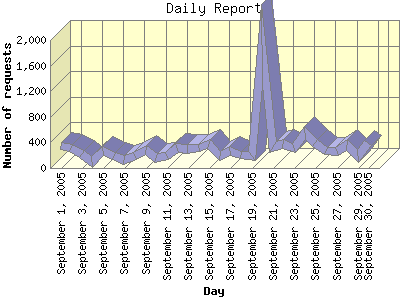

Report generated by Analog 6.0 and Report Magic 2.21
|
Web Server Statistics for "Harish Narayanan (hnarayan) - September 2005" Report generated by Analog 6.0 and Report Magic 2.21 |
The Daily Report identifies the activity for each day within the reporting period. Remember that one page hit can result in several server requests as the images for each page are loaded.

| Day | Number of requests | Number of bytes transferred | Percentage of the bytes | Percentage of the requests | |
|---|---|---|---|---|---|
| 1. | September 1, 2005 | 336 | 12.904 MB | 2.49% | 3.42% |
| 2. | September 2, 2005 | 309 | 8.425 MB | 1.62% | 3.14% |
| 3. | September 3, 2005 | 221 | 5.793 MB | 1.12% | 2.25% |
| 4. | September 4, 2005 | 95 | 5.499 MB | 1.06% | 0.97% |
| 5. | September 5, 2005 | 260 | 10.978 MB | 2.12% | 2.65% |
| 6. | September 6, 2005 | 192 | 51.878 MB | 10.01% | 1.95% |
| 7. | September 7, 2005 | 125 | 7.378 MB | 1.42% | 1.27% |
| 8. | September 8, 2005 | 181 | 3.811 MB | 0.73% | 1.84% |
| 9. | September 9, 2005 | 289 | 7.927 MB | 1.53% | 2.94% |
| 10. | September 10, 2005 | 150 | 4.341 MB | 0.84% | 1.53% |
| 11. | September 11, 2005 | 180 | 53.080 MB | 10.24% | 1.83% |
| 12. | September 12, 2005 | 309 | 7.876 MB | 1.52% | 3.14% |
| 13. | September 13, 2005 | 295 | 12.730 MB | 2.46% | 3.00% |
| 14. | September 14, 2005 | 317 | 8.701 MB | 1.68% | 3.23% |
| 15. | September 15, 2005 | 381 | 15.377 MB | 2.96% | 3.88% |
| 16. | September 16, 2005 | 184 | 8.426 MB | 1.62% | 1.87% |
| 17. | September 17, 2005 | 267 | 10.991 MB | 2.12% | 2.72% |
| 18. | September 18, 2005 | 202 | 8.363 MB | 1.61% | 2.06% |
| 19. | September 19, 2005 | 188 | 4.831 MB | 0.93% | 1.91% |
| 20. | September 20, 2005 | 1,926 | 14.923 MB | 2.88% | 19.60% |
| 21. | September 21, 2005 | 322 | 11.279 MB | 2.17% | 3.28% |
| 22. | September 22, 2005 | 375 | 12.424 MB | 2.40% | 3.82% |
| 23. | September 23, 2005 | 305 | 70.835 MB | 13.66% | 3.10% |
| 24. | September 24, 2005 | 547 | 18.223 MB | 3.51% | 5.57% |
| 25. | September 25, 2005 | 395 | 13.103 MB | 2.53% | 4.02% |
| 26. | September 26, 2005 | 260 | 12.511 MB | 2.41% | 2.65% |
| 27. | September 27, 2005 | 268 | 15.858 MB | 3.06% | 2.73% |
| 28. | September 28, 2005 | 367 | 84.755 MB | 16.34% | 3.73% |
| 29. | September 29, 2005 | 184 | 5.044 MB | 0.97% | 1.87% |
| 30. | September 30, 2005 | 398 | 10.270 MB | 1.98% | 4.05% |
Most active day September 20, 2005 : 512 pages sent. 1,926 requests handled. 15,648,264.00 served.
Daily average: 327 requests handled. 17.285 MB served.
This report was generated on October 5, 2005 09:21.
Report time frame September 1, 2005 00:02 to September 30, 2005 23:47.
| Web statistics report produced by: | |
 Analog 6.0 Analog 6.0 |  Report Magic 2.21 Report Magic 2.21 |